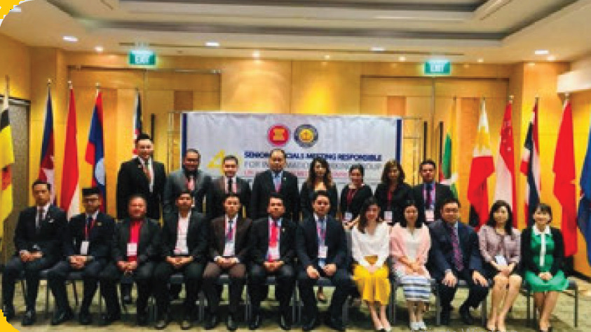

GALERI



Kerjasama regional adalah kerjasama antara negara-negara di satu kawasan geografis tertentu
yang melibatkan lebih
dari 2 (dua) Negara. Kerjasama Sub Regional merupakan kerjasama yang mendukung percepatan pertumbuhan
ekonomi di kawasan Regional.
Terdapat kurang lebih 10 organisasi Regional yang terletak di berbagai
kawasan, antara lain; ASEAN ( Association of Southeast Asian Nations), NAFTA (North American Free Trade
Area), AFTA (Asean Free Trade Area ), Asia Pacific Economic Cooperation(APEC), Uni Eropa (European Union),
EFTA(European Free Trade Area), SAARC (South Asian Association for Regional Cooperation), COMECON (East
European Council for Mutual Economic Assistance ), dan APO (Asian Production Organization) Indonesia
merupakan kawasan Asian Tenggara yang masuk dalam persekutuan besar Asia Tenggara yaitu ASEAN dan organisasi
asia lainnya.
Tujuan dan Manfaat Kerja Sama Regional: Memperkuat hubungan ekonomi dan perdagangan antarnegara dalam satu wilayah tertentu, memfasilitas dalam pembangunan sosial, budaya, pendidikan, maupun pariwisata dalam meningkatkan pemahaman dalam menghargai dan menghormati, menjaga stabilitas politik dan kemaanan di kawasan dalam kerja sama di bidang pertahanan, dan masih banyak lagi.
1. Kerja sama ASEAN : ASEAN Community-based Climate Action (CBCA). Work Shop pertama diadakan pada tanggal 7 & 8 Maret 2024 di Mandalika. Pertemuan tersebut dihadiri oleh perwakilan dari negara-negara ASEAN. Work Shop ini dibuka oleh pengantar dari perwakilan Indonesia yaitu Dr. Wahyu Marjaka, M.Eng. yang merupakan Direktur MS2R-KLHK. Ia menyampaikan bahwa sekarang kita sudah menghadapi berbagai macam masalah mengenai perubahan iklim yang menjadi tantangan terbesar kita, terutama di lingkup ASEAN. Dengan itu, kita membutuhkan kolaborasi dalam penanganan perubahan iklim ini yang meliputi seluruh negara ASEAN agar proyek ini dapat berjalan dengan baik sehingga tujuan dapat dicapai dan menghindari hal berdampak buruk bagi negara-negara tersebut. Lalu, seluruh perwakilan mempresentasikan program atau kebijakan negaranya dalam mendukung adanya aksi mengenai perubahan iklim. Indonesia menjelaskan mengenai ProKlim yang merupakan Program Kampung Iklim. Di mana, perwakilan ketua ProKlim mengunjungi lapangan di Kampung Iklim untuk mengobservasi dan melakukan praktik dalam pemanfaatan sumber daya alam seperti limbah, pupuk gas atau organik, dan budidaya taman. Kegiatan ini ditutup dengan seremoni penanaman pohon di Kawasan Hutan Taman Nasional Gunung Rinjani oleh masing-masing perwakilan negara ASEAN.
2. Kerja sama Uni Eropa dengan ASEAN: Uni Eropa mencetuskan sebuah program EU Green Diplomacy Week atau Pekan Diplomasi Hijau Uni Eropa yang melibatkan organisasi antar kawasan, yakni, ASEAN. Kegiatan ini merupakan contoh konkret dari persekutuan negara-negara di benua Eropa dalam mewujudkan tindakan penanganan iklim dengan dorongan kerja sama mengatai masalah-masalah tersebut. Di Indonesia, acara ini diselenggarakan pada hari Minggu, 27 Oktober 2024 di Plaza Sudirman, Gelora Bung Karno (GBK) Jakarta. Di mana, acara ini berisi kegiatan jalan santai dan lari 5K dengan nama "EU ASEAN GET UP and MOVE", pertemuan publik terbuka yang menampilkan proyek UE-ASEAN serta negara anggota UE yang dilaksanakan berupa talkshow, dan juga Bazaar dan workshop DIY Beeswax Food Wrap dari Demibumi. Acara ini juga didukung oleh World Cleanup Day Indonesia yang mengajak para relawan untuk peduli terhadap kebersihan lingkungan.